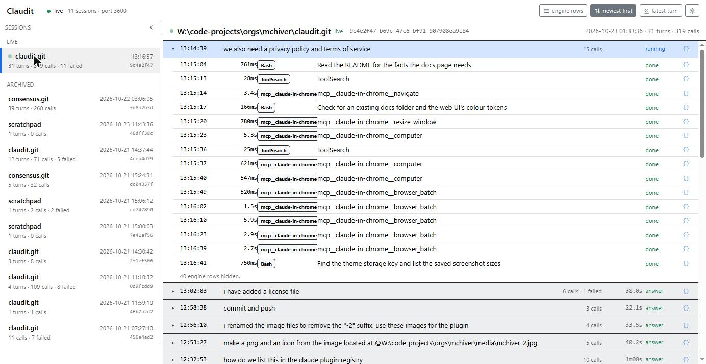
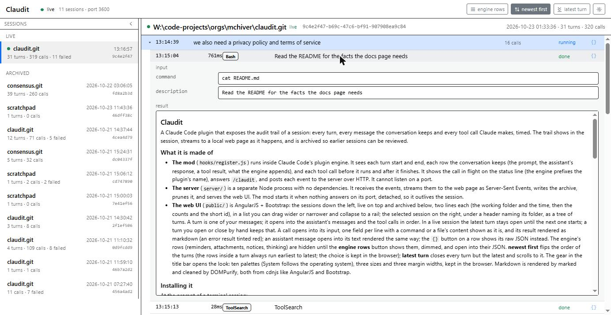
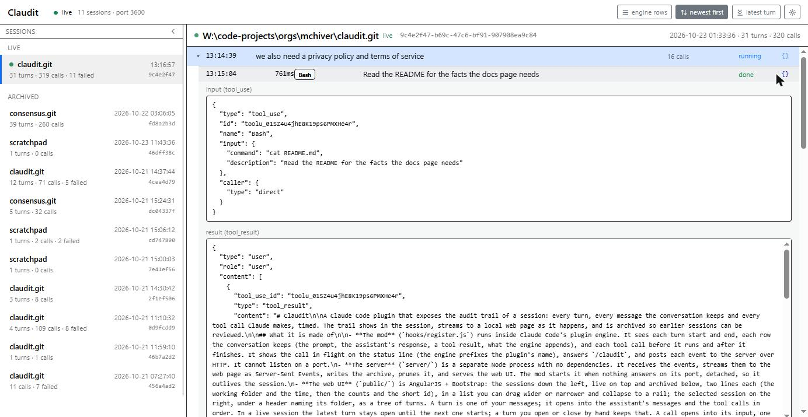
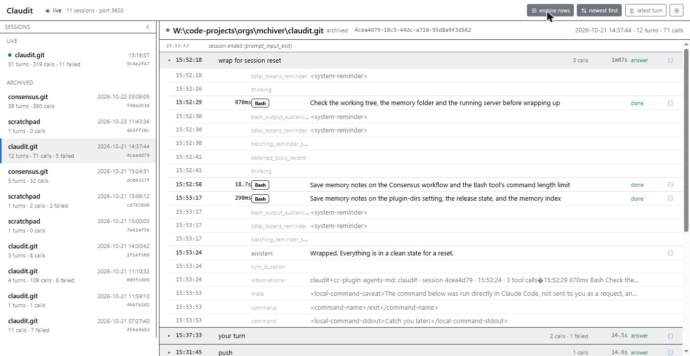
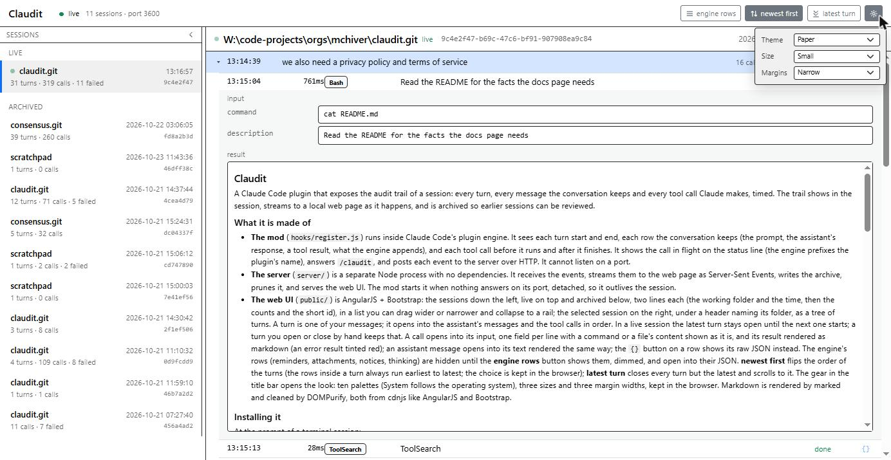
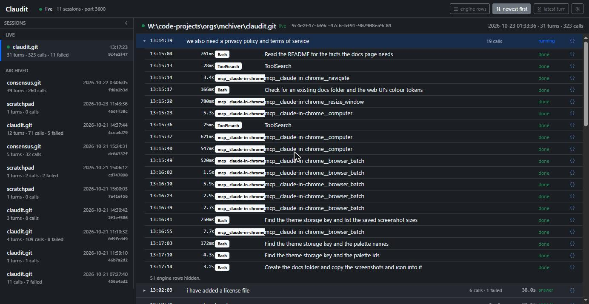
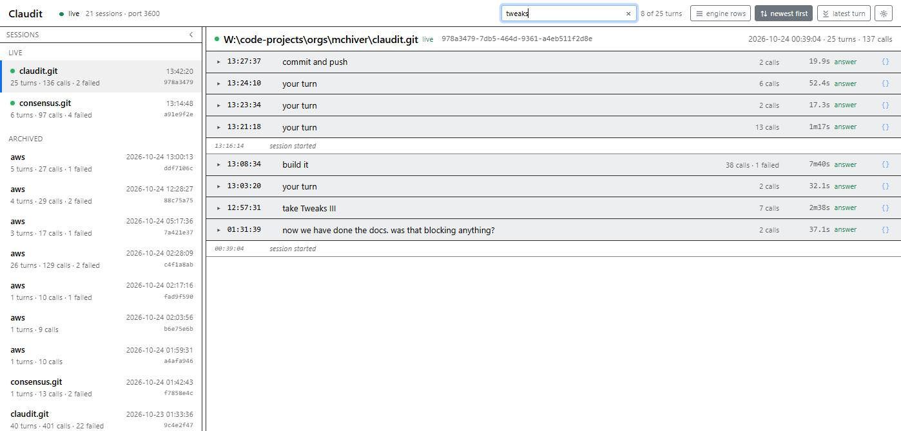
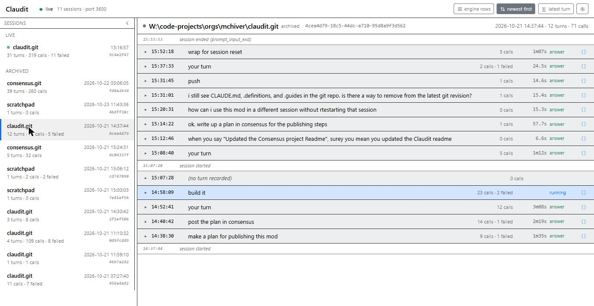

Claudit
The audit trail of a Claude Code session, on a page of your own.
What Claudit does
Claudit is a Claude Code plugin. It watches a session from the inside and keeps the trail: every turn, every message the conversation keeps, and every tool call Claude makes, each one timed. The trail shows on the session's status line as it happens, streams to a web page on your own machine, and is archived so earlier sessions can be reviewed.
Everything stays on your computer. The plugin talks to a small server bound to 127.0.0.1, the server writes the archive under your home folder, and the page reads from that server. Nothing is sent anywhere else. The privacy policy says the same in full.

How it works
Claudit is three parts that fit together.
The mod
A hooks module that runs inside Claude Code's plugin engine. It sees each turn start and end, each row the conversation keeps, and each tool call before it runs and after it finishes. It shows the call in flight on the status line, answers the /claudit command, and posts each event to the server over HTTP.
The server
A separate Node process with no dependencies, listening on 127.0.0.1:41713. It receives the events, streams them to the page as they arrive, writes the archive, prunes it after a retention period, and serves the page. The mod starts it when nothing answers on the port, detached, so it outlives the session.
The page
A web page at http://127.0.0.1:41713. Sessions down the left, live on top and archived below; the selected session on the right as a tree of turns. A turn opens into the assistant's messages and the tool calls in order; a call opens into its input and its result.
Installing it
At the prompt of a Claude Code terminal session:
/plugin install claudit --marketplace mchiver/clauditFrom a shell:
claude plugin install claudit --marketplace mchiver/clauditIn the desktop app, where /plugin does not run: click + next to the prompt box, then Plugins, Add marketplace with mchiver/claudit, then Add plugin.
Answer y to add the marketplace, then pick a scope. The mod runs from then on, and in every later session under the user scope. The server needs Node 20 or later on the PATH and nothing else. A later version comes with:
claude plugin update clauditUsing it
Recording is on by default. Three forms of one command control it in the session:
/claudit status whether it is on, its version, the server's address and version, the counts
/claudit off stop recording (kept across sessions)
/claudit on record againWhile Claude works, the status line shows the tool in flight, how long it has run and what it is doing, with the count of calls so far this turn. Open http://127.0.0.1:41713 in a browser once a session has started the server, and the same session is there as it happens.
Reading a turn
A turn is one of your messages. It opens into the assistant's messages and the tool calls in order, each row with its time, the tool, a one-line summary, how long it took and how it ended: done, denied or failed. While a turn or a call is still running, its duration counts up in whole seconds until the exact figure arrives. In a live session the latest turn stays open until the next one starts; a turn you open or close by hand keeps that choice.
A call opens into its input, one field per line with a command or a file's content shown as it is, and its result rendered as markdown. An error result is tinted red. An assistant message opens into its text rendered the same way.

The {} button on any row shows its raw JSON instead: the tool_use block and the tool_result message exactly as the conversation holds them. Press it again to go back.

The buttons
- engine rows shows the rows the engine appends to the conversation: reminders, attachments, notices, thinking. They are hidden by default, and shown dimmed when on; each opens into its JSON.
- newest first flips the order of the turns, so the turn in flight is at the top. The rows inside a turn always run earliest to latest. The choice is kept in the browser.
- latest turn closes every turn but the latest and scrolls to it.
- The gear opens the look: ten palettes (System follows the operating system), three sizes and three margin widths, kept in the browser.



Finding a turn
The search box in the title bar filters the turns of the session on screen as you type. A turn stays when the text appears, ignoring case, in your message, in the assistant's text, or in a tool call's name or summary line; tool inputs and results are not searched. A count beside the box says how many turns match. The × or Escape clears it, and the text carries over when you pick another session.

Earlier sessions
Sessions that have ended are listed under Archived, newest first, each with its folder, its start time and its counts. Pick one and its turns are there as they were recorded, every turn closed until you open it. The session list can be dragged wider or narrower, and collapsed to a rail.

Configuration
~/.claudit/config.json, every key optional:
{
"port": 41713,
"archive_folder": "~/.claudit/archive",
"retention_days": 30,
"live_minutes": 30,
"messages": true,
"message_limit": 65536
}- port
- Where the server listens, on 127.0.0.1. The plugin option
portin Claude Code's plugin configuration overrides it when above 0. - archive_folder
- One folder per day, holding a JSON Lines file of events per session with a summary beside it.
- retention_days
- Day folders older than this are removed at start and once a day. 0 keeps everything.
- live_minutes
- A session that has not ended counts as live for this long after its last event.
- messages
- false stops the message rows (the conversation's JSON), leaving the turns and the calls.
- message_limit
- The most bytes one row's JSON may take. A larger row has its text, thinking and tool-result content cut to fit, and the event marked truncated. 0 means no cap.
The server's own output goes to ~/.claudit/server.log.
Where the data lives
The archive is a folder of plain files under your home folder, one day per folder. Delete a folder, or the whole archive, and that is gone. The retention setting does the same on a schedule. The page keeps only your look and layout choices, in the browser's local storage. There are no accounts, no telemetry and no remote service: see the privacy policy and the terms.